Overview
In this project, I implemented a basic 2-D shading pipeline, including rasterizing single-color triangles, antialiasing by supersampling, building transform matrices, determining Barycentric coordinates, and texure mapping with mipmaps.
Section I: Rasterization
Part 1: Rasterizing single-color triangles
In the first task, I rasterized triangles in single color.
First, I determined the maximum and minimum of x and y coordinates based on the coordinates of the three vertices.
Then I only performed point-in-triangle tests for pixels within the range by plugging the coordinates of each pixel into a line function.
Also, to take the winding order of the vertices (i.e. clockwise or counter-clockwise) into consideration, I checked both orders to include all pixels I need to rasterize. (All greater than 0 or all smaller than 0)

|
|
|
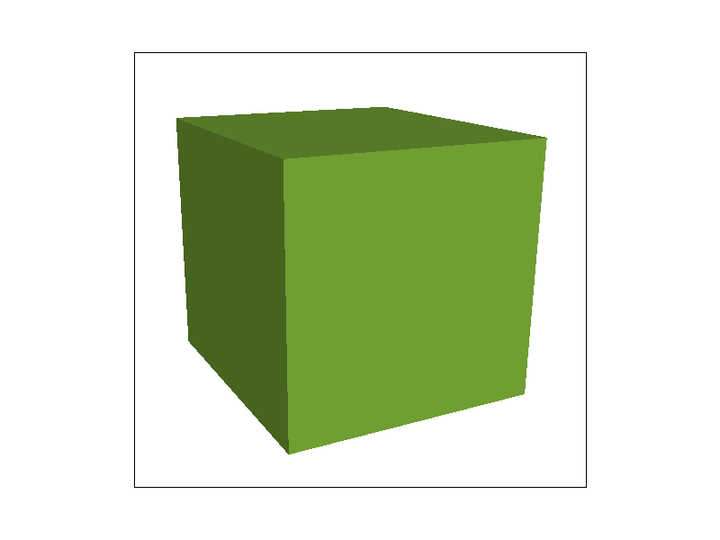
|
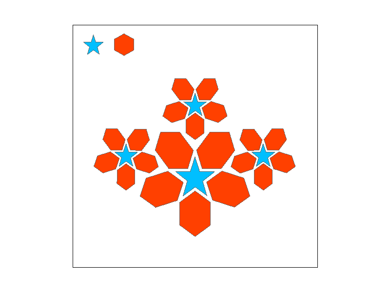
|
Part 2: Antialiasing triangles
In the second task, I implemented supersampling to antialias the triangles.
First, I determined the range of x and y coordinates as in task 1.
Second, I break down each pixel into sqrt(sample_rate) * sqrt(sample_rate) sub-pixels distributed over the pixel area.
Then I saved the color of each sub pixel in to a sample buffer,
and finally populate the framebuffer from the supersamples by averaging the colors of sub pixels.
As shown in the images attatched below, higher sample rate leads to smoother edge of the triangle because we have more subpixels to help filter out high frequencies.
|
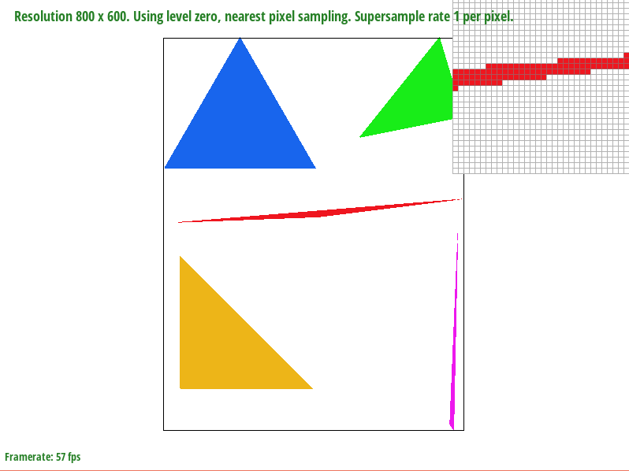
|
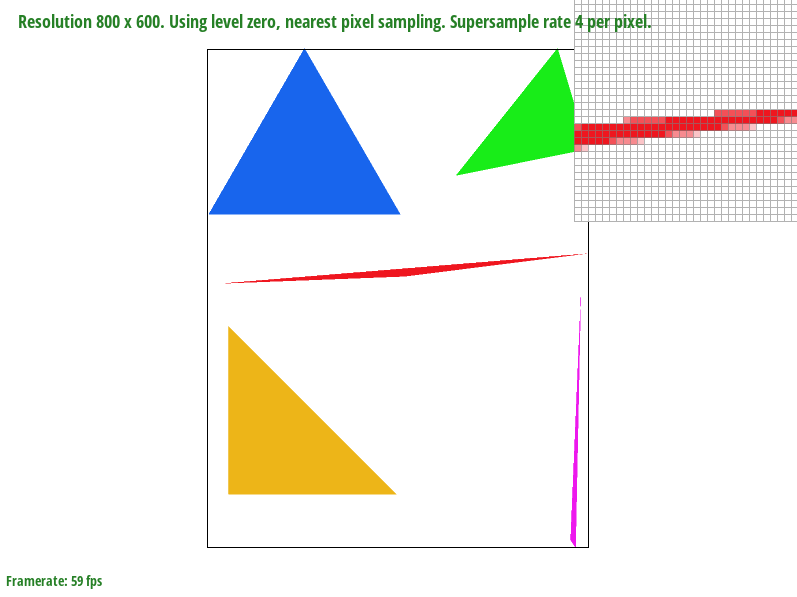
|
|
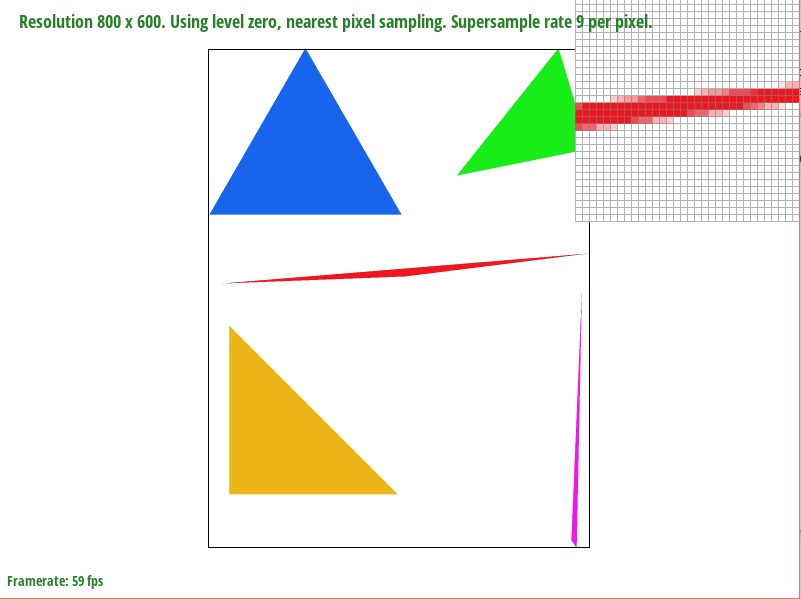
|
|
Part 3: Transforms
In the third task, I built three matrices in homogeneous coordinates to perform translate, scale, and rotate operations.
I created my new running robot by performing rotation on the legs and arms of the robot, and modify the coordinates of translate and scale operator to generate better visual effects.
|
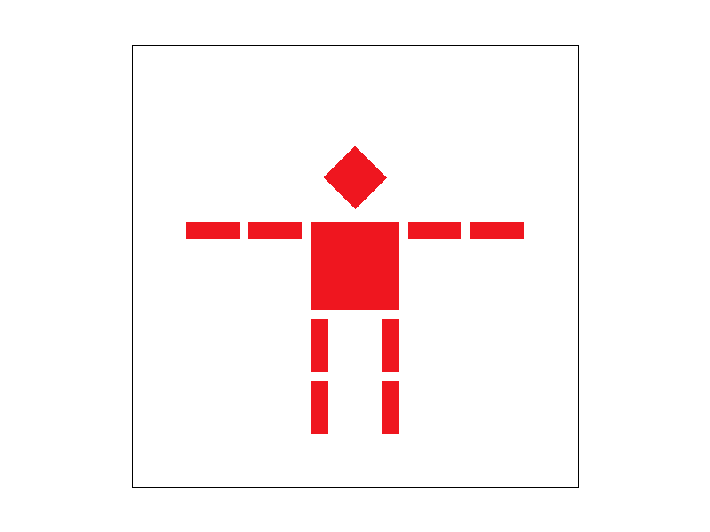
|
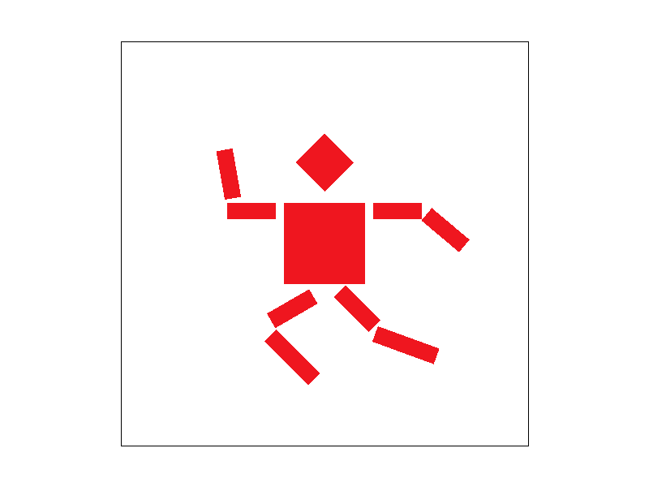
|
Section II: Sampling
Part 4: Barycentric coordinates
In the fourth task, I implemented a Barycentric coordinates generator.
Barycentric coordinates is useful for interpolating across a triangle area and map correspond value to pixels inside the triangle (for example, color).
To avoid a compiler bug, I computed all the three coordinates from scratch and did not use the formula lambda = 1 - alpha - beta.
|
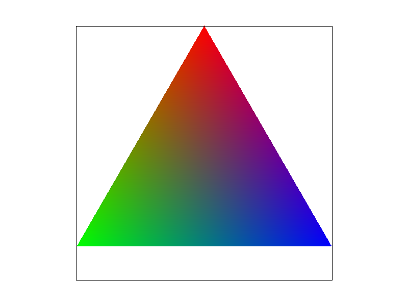
|
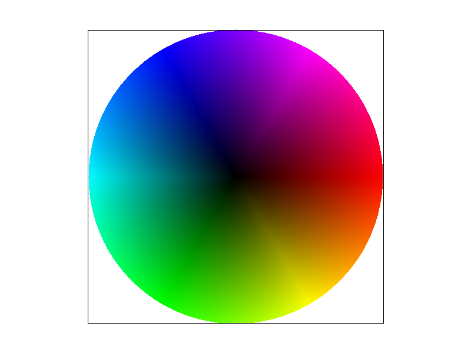
|
Part 5: "Pixel sampling" for texture mapping
In the fifth task, I implemented two texture sampling approach: nearest neighbor and bilinear interpolation.
For this task, I focused on the full-resolution texture image with default level = 0.
Pixel sampling is the mapping between screen space coordinates with a texture space UV coordinates.
First, I found the Barycentric coordinates of each pixel inside the triangle and interpolate the UV coordinates of the vertices to get the UV coordinate for the pixel.
For the nearest neighbor interpolation,
I multiplied the UV coordinate by (width - 1) and (height - 1) of the texture map at level 0 and rounded the coordinate to the nearest integer.
Then I used get_texels method to get the color at the specific coordinate on the texture map.
For the bilinear interpolation, I multiplied the UV coordinate by (width - 1) and (height - 1) of the texture map at level 0,
and use ceil and floor function to generate the four surrounding texels and use get_texels function to get the four colors.
Then I took two horizontal lerps and one vertical lerp to get the color of the pixel I'm interested in.
|
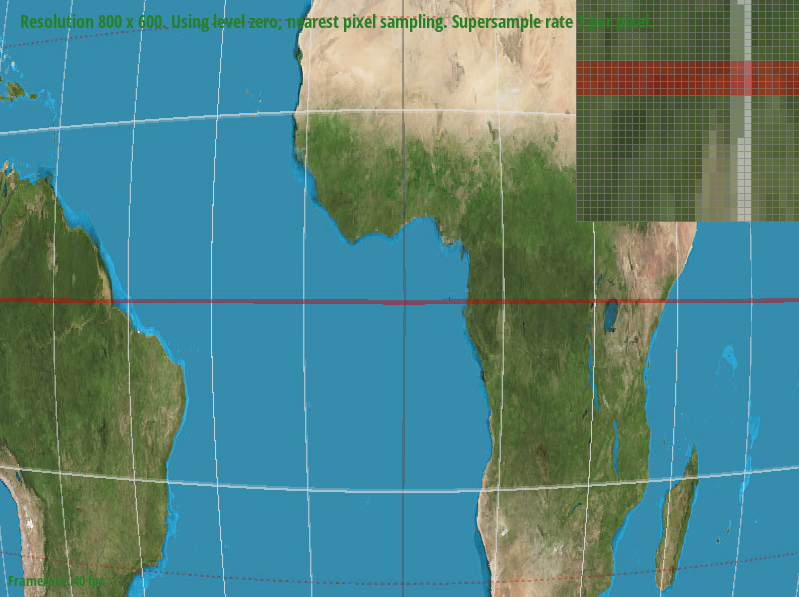
|
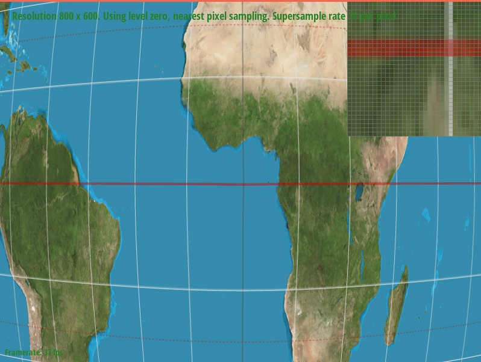
|
|
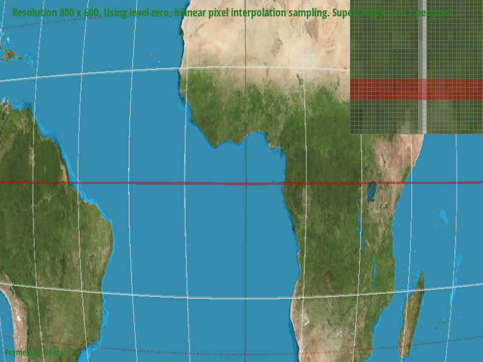
|
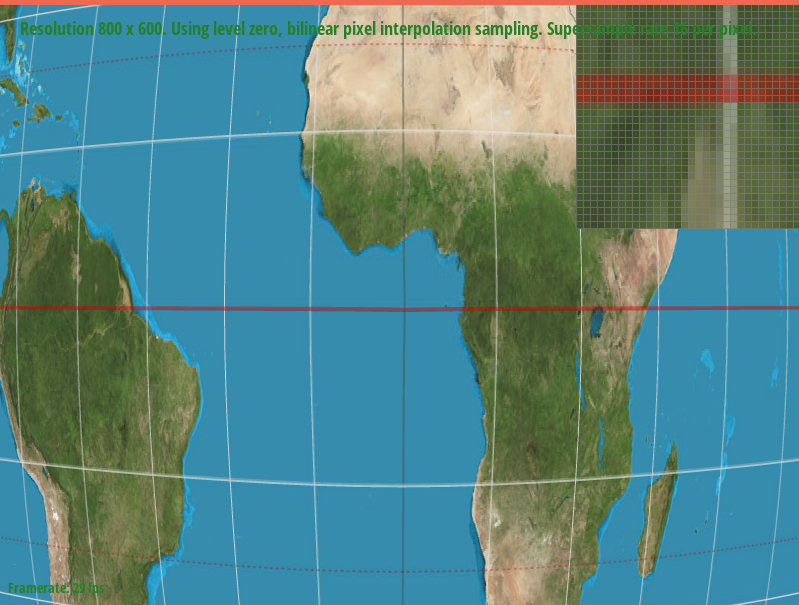
|
Part 6: "Level sampling" with mipmaps for texture mapping
Level sampling is useful for antialiasing in texture mapping.
The different levels are low-pass filters that filtering out frequencies that are too high for a specific pixel.
I created various resolution levels for a texture (i.e. mipmap),
and used the level sampling method I chose to select the desired level that has the proper resolution for each pixel in triangles.
In RasterizerImp::rasterize_textured_triangle, first, I computed the Barycentric coordinates for (x, y), (x + 1, y), (x, y + 1) for each (x, y) in the triangle,
and then interpolate the UV coordinates of the three vertices to get (u, v), (ux, vx), (uy, vy).
Second, I set barycentric differentials in the SampleParams struct S as S.p_dx_uv = (ux, vx), S.p_dx_uv = (uy, vy).
Also, I set S.lsm = lsm to get the customized level sampling method.
Third, with the SampleParams properly setted, I fill the pixel with the color returned by texture.sample(S).
In Texture::sample, first I got the float number level by calling get_level on the SampleParams struct S,
then convert the level into integer(s) to match mipmap images in that level.
For L_ZERO, I simply set level to be 0 and use S.psm to return the color as in Task 5.
For L_NEAREST, I rounded the level to the nearest integer that is in the range of 0 to the size of mitmap,
and then return the color sampled by S.psm.
For L_LINEAR, I get the floor and ceil of level and clamped them into the range of 0 to the size of mitmap,
and then use linear interpolation to return the color based on the colors sampled by S.psm at the floor and ceil levels.
In Texture::get_level, I calculated the difference vectors p_dx_uv - p_uv and p_dy_uv - p_uv and multiplied them by the width and height of the level 0 mipmap respectively, as in task 5,
Then I assigned L to be the maximum norm of the two updated vectors, and return log2(L) as the level we should choose.
Speed:
Pixel Sampling: Nearest Neighbor is faster than Bilinear Interpolation.
Level Sampling: Level Zero is the fasted. The Nearest method has to compute the mipmap level,
so it is a little bit slower to Level Zero in speed.
Bilinear method is the slowest one, because it has to do linear interpolation between the colors from two levels of mipmap.
Supersampling: The samller the sample rate is, the faster the speed is.
Memory Usage:
Pixel Sampling: Bilinear Interpolation needs slightly more memory than Nearest Neighbor to store colors from four texels to do linear interpolation.
Level Sampling: Memory used by Level Zero is the least. Nearest and Bilinear method use slightly more memory than Level Zero method does,
because they have mipmap, which uses about 4/3 times the memory needed to store a full resolution image.
Supersampling: Memory usage scales linearly with the sample rate. The samller the sample rate is, the less the memory usage is.
Antialiasing Power:
Pixel Sampling: Bilinear Interpolation has greater antialiasing power than Nearest neighbor.
Level Sampling: Bilinear > Nearest > Level Zero.
Supersampling: Large sample rate has greater antialiasing power.
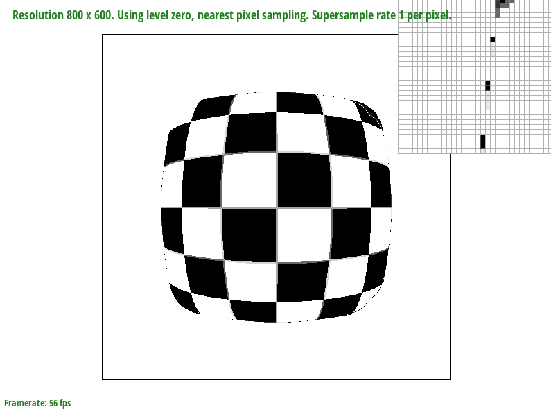
lsm = L_ZERO; psm = P_NEAREST
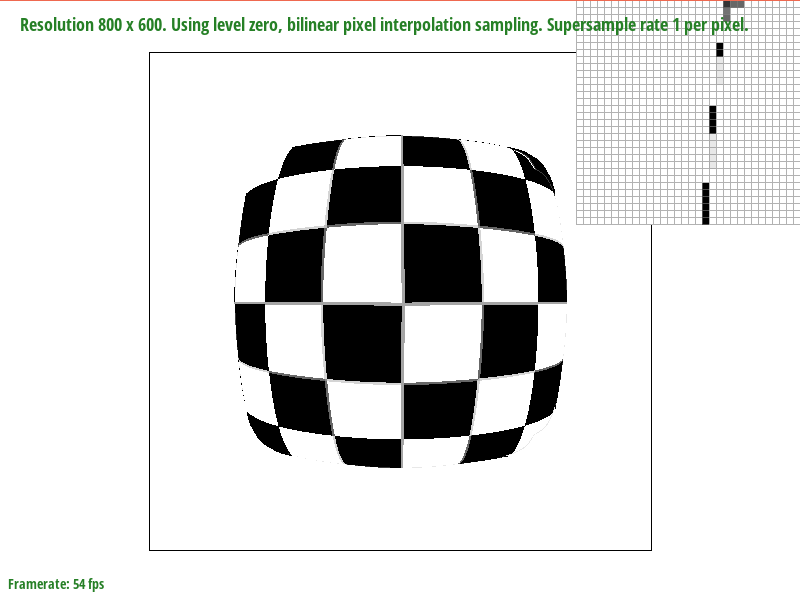
lsm = L_ZERO; psm = P_LINEAR
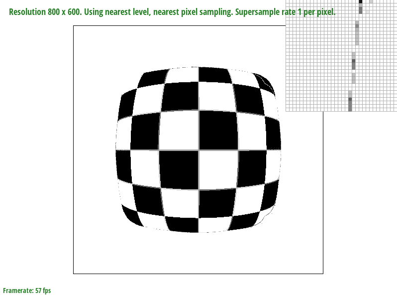
lsm = L_NEAREST; psm = P_NEAREST
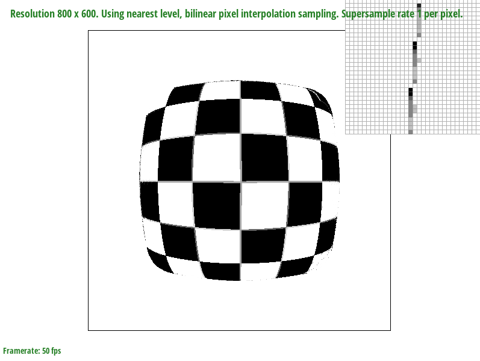
lsm = L_NEAREST; psm = P_LINEAR
|
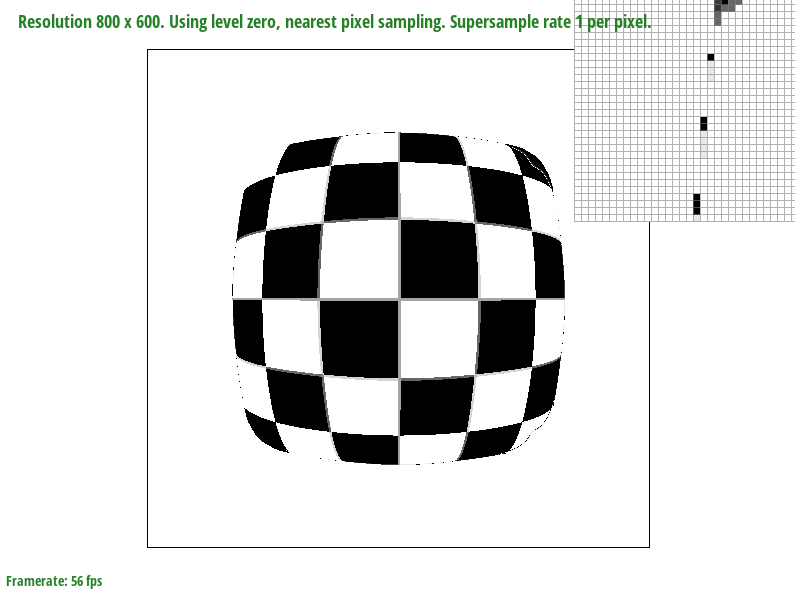
|
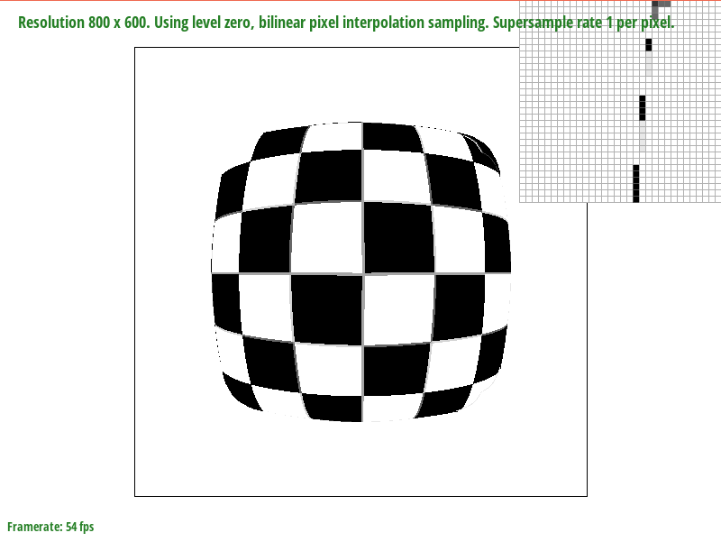
|
|
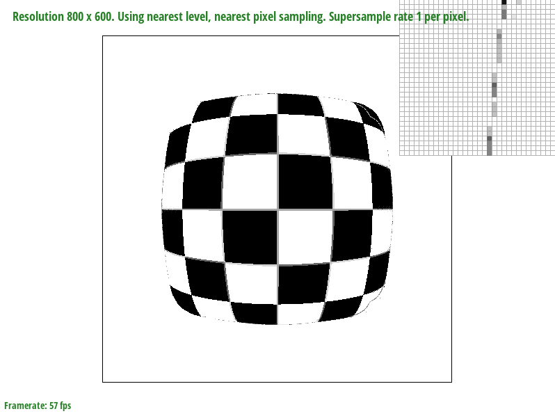
|
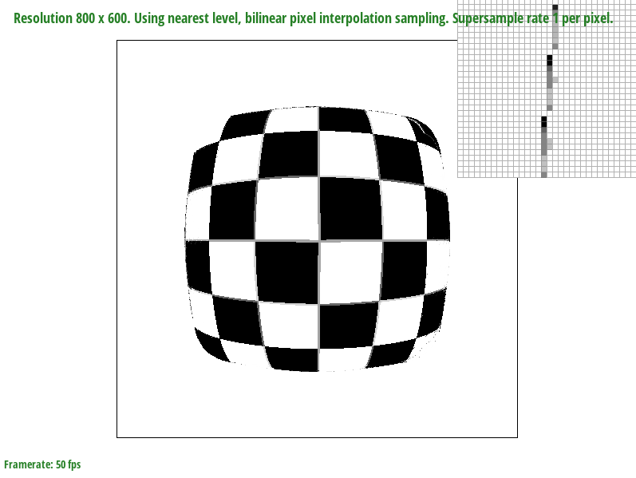
|
https://cal-cs184-student.github.io/sp22-project-webpages-qjiberkeley/proj1/index.html